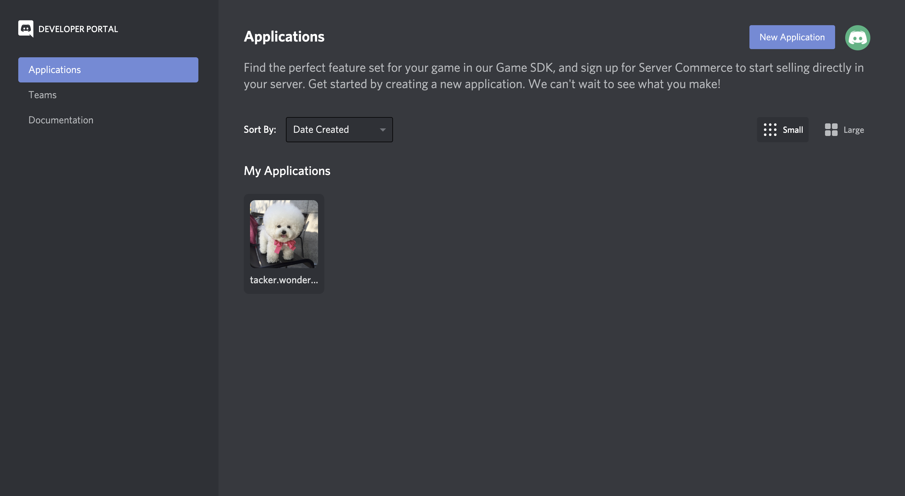
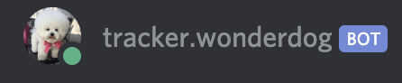
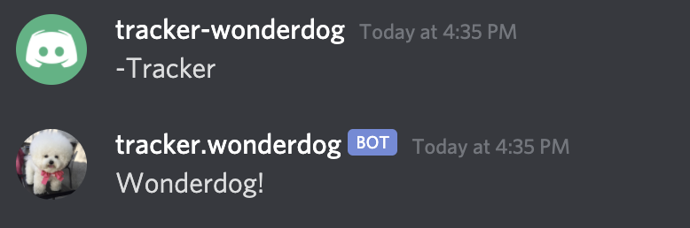
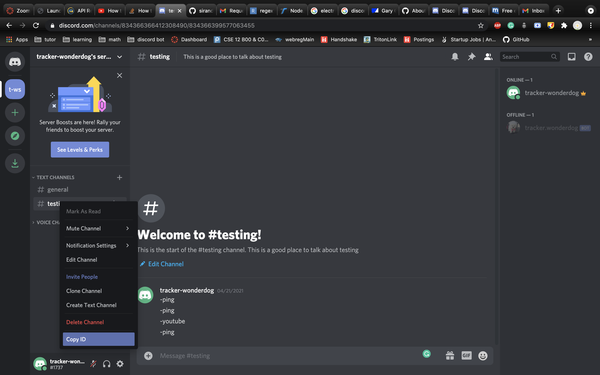

CSE12 & CSE15L Academic Integrity Scraper
A Discord bot that scrapes CSE12 and CSE15L Discord servers for possible Academic Integrity (AI) violations.
Table of Contents
- Table of Contents
- Purpose
- Accounts and Credentials
- Is tracker.wonderdog Online?
- Integrating tracker.wonderdog into a Server
- Heroku
- Files
- Needs Further Development
- Authors and Contact
Purpose
tracker.wonderdog is a Discord scraper implemented in Node.js and hosted on Heroku. Its purpose is to not identify AI violations, but rather record suspicious messages and images to be reviewed by the Instructional staff for AI violations.
In order to identify possible AI violations, tracker.wonderdog listens for messages that have a Question and Answer format. In this context:
-
Question
- A question is a message sent by a user looking for a solution for a homework problem or concept.
- Ex: "anyone got any ideas for num 7"
-
Answer
- An answer is the response to that question.
- Ex: "Just clone the repo"
tracker.wonderdog uses regular expressions in order to identify flagged tokens and phrases that match this Question and Answer format. For the example above, the algorithm would identify the tokens: (for, num, 7) and (clone, repo) as words associated with a possible AI violation.
Once tracker.wonderdog identifies possible AI violations, the user ID, channel ID, message content, image (if applicable), date, time, and timezone are written to the class's CSV file.
Every Wednesday, at 3:00 PM PST/PDT, the CSV file is sent to a mailing list.
Accounts and Credentials
There are several accounts associated with tracker.wonderdog. All of the accounts, emails, passwords, tokens, etc. can be found in the config.ini file
Discord Account
A Discord account has been set up in order to use get access to Discord's API and bots. tracker-wonderdog is the account associted with tracker.wonderdog.
To login to the Discord account, use the credentials found under [discord_account] in the config.ini file.
The fields for [discord_account] are as follows:
-
email: the email associated with the account -
username: the username assocaited with the account -
password: the password associated with the account -
app_id: the application id associated withtracker.wonderdog(see next section) -
DOB: the account owner's date of birth
Discord Bot Account
Discord allows users to create applications, which have a bot tied to that application. tracker.wonderdog is the application and bot used for scraping channels.
In order to view the application page for tracker.wonderdog, login to Discord's Developer Page using the credentials found under [discord_account] in the config.ini file.
Upon login, select the tracker.wonderdog application under My Applications.

Managing the application can be done through this page.
The fields for [discord_bot] are as follows:
-
username: the name of the application/bot -
token: allows the bot to login and begin scraping messages in main.js
Mail[.]com Account
This is the account associated with the Discord account.
To login to mail.com, use the credentials found under [mail] in the config.ini file.
If passwords resets or any authentication emails must be approved, they will be sent to this account.
The fields for [mail] are as follows:
-
email: the email associated with the account -
password: the password associated with the account -
first_name: the first name of the account owner -
last_name: the last name of the account owner -
DOB: the account owner's date of birth
Gmail Account
This is the account that sends automated weekly reports will to a specified mailing list.
To login to the Gmail account, use the credentials found under [gmail] in the config.ini file.
The fields for [mail] are as follows:
-
email: the email associated with the account -
password: the password associated with the account -
first_name: the first name of the account owner -
last_name: the last name of the account owner -
DOB: the account owner's date of birth -
gender: the owner's gender
Is tracker.wonderdog Online?
Since tracker.wonderdog is hosted on a Heroku server, it is constantly listening for messages. To check if there are connection issues, simply navigate to any server that has the bot and see if the green dot is next to its name. If it is on, then it is online. Otherwise, login to Heroku and view what is causing build issues.
tracker.wonderdog should look this if it is online:

tracker.wonderdog has one valid command. Navigate to any channel that it has access to and type the message -Tracker. tracker.wonderdog should reply with Wonderdog!:

This command should only be used as a sanity check for if the bot is listening for messages.
Integrating tracker.wonderdog into a Server
Since the CSE12 and CSE15L Discords are student run, each quarter will have a different server made by that quarter's students. This means tracker.wonderdog needs some quarterly configurations before it can start scraping a new discord server.
Get Server Admin to Add the Bot
Tutors must identify the CSE12/15L Discord's admin and ask them to add tracker.wonderdog to the server via this link: https://discord.com/oauth2/authorize?client_id=834369182673797121&scope=bot&permissions=68608
Get Channel ID's
Tutors must then identify the channels associated with Gary's CSE12 and CSE15L.
After identifying the channels, add each ID to the corresponding variable in main.js, making sure to delete the previous id's listed. Depending on the class there can be only one to multiple channels per class.

// Channel ID's for Gary's 12/15L. let cse15L_channel_ids = [ 761282554392346656, // replace with new ID 826267923681116161, // replace with new ID ]; let cse12_channel_ids = [ 826160349421895710, // replace with new ID 821571381476589619 // replace with new ID ];
Update CSV Files
-
Create 2 new CSV files for CSE12 and CSE15L in
Reports. Name the filescse-12-<quarter>-ai-report.csvandcse-15L-<quarter>-ai-report.csv. Replace<quarter>with the quarter code (fa/wi/sp) followed by the year.- Ex: cse-12-sp21-ai-report.csv
- Ex: cse-15L-fa20-ai-report.csv
-
Open the CSV's and put this file header on the first line. These are the columns for the CSV file.
user_id,channel_id,message,image,date,time,zone
Make sure that the cursor is then on the next line (line 2), before exiting the file, otherwise the CSV file will be ill-formatted!
-
Navigate to report_handler.js and replace
const id_quarter = "last_quarter_code";withconst id_quarter = "this_quarters_code";.
These 3 steps will ensure the messages are formatted and written correctly to the CSV files.
Push Changes to GitHub
The CSE12 & CSE15L Academic Integrity Scraper is hosted on Heroku. The github repository for this project is linked to Heroku and automatically deploys the main branch of the repository. So be sure to push to the repository whenever changes are made.
Heroku
The Node.js app is hosted on Heroku. Contact lsirand@ucsd.edu to get access to the application's Heroku page.
Files
main.js
- is reponsible for initialzing the bot and creating event listeners for when messages are sent to the discord and for running ScheduledJobs.
ai_handler.js
- uses regular expressions to check for possible AI violations in messages.
report_handler.js
- if ai_handler.js determines the message is suspicious, this file writes the user id, channel id, message, image, date, time, and timezone to the appropriate CSV file.
email_handler.js
- is called whenever the ScheduledJobs event is triggered in main.js. This file builds an email, attatches the CSV files, and sends them to the mailing list specified in the file.
Resources/config.ini
- holds the emails, usernames, passwords, etc. used by all accounts. Whenever something is updated, config.ini must be updated as files such as main.js use it to fetch tokens.
Resources/ai_reg_15L.js
- holds the Regular Expressions to homework answers.
Procfile
This file tells Heroku what to run on boot up.
Needs Further Development
- Better pattern matching is needed for detecting AI for CSE 12.
Authors and Contact
The CSE12 & CSE15L Academic Integrity Scraper, tracker-wonderdog, and tracker.wonderdog were created by Luke Sirand for Professor Gary Gillespie and his instructional staff.
For questions and concerns, contact Luke Sirand at lsirand@ucsd.edu